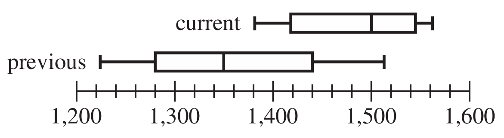
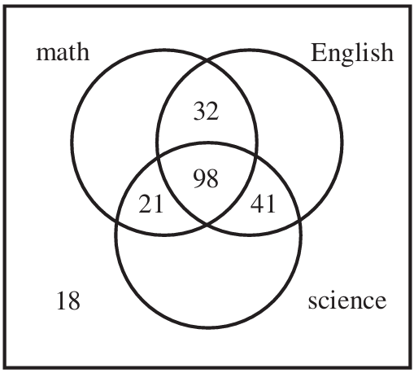
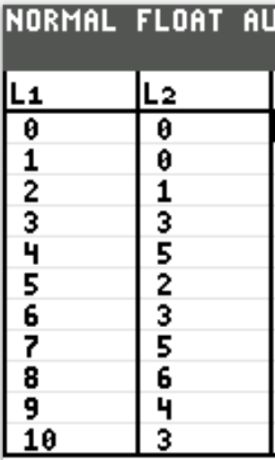
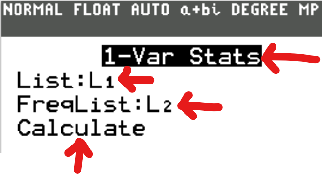
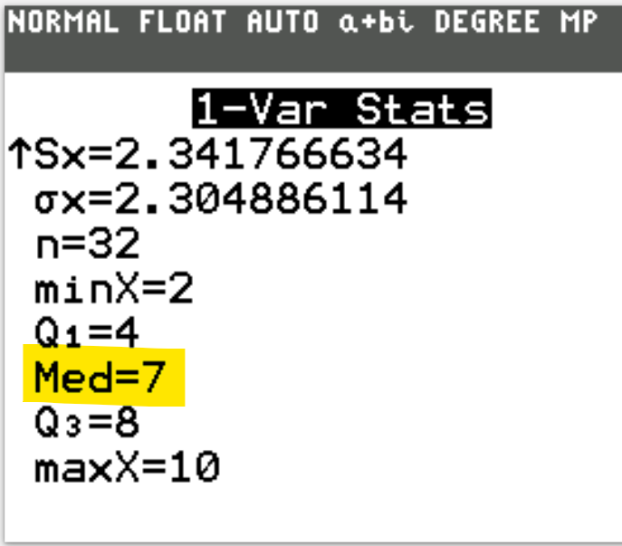
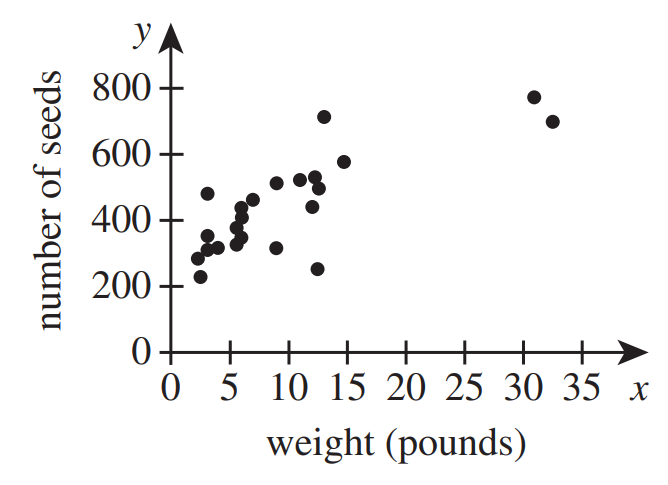
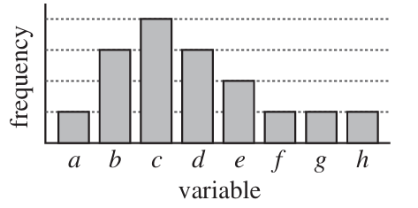
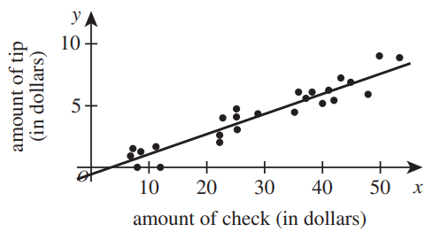

For the Classic ACT exam:
The ACT Mathematics test is a timed exam...60 questions in 60 minutes
This implies that you have to solve each question in one minute.
Each of the first 20 questions (less challenging) will typically take less than a minute a solve.
Each of the next 20 questions (medium challenging) may take about a minute to solve.
Each of the last 20 questions (more challenging) may take more than a minute to solve.
The goal is to maximize your time.
You use the time saved on the questions you solve in less than a minute to solve questions that will take more
than a minute.
So, you should try to solve each question correctly and timely.
So, it is not just solving a question correctly, but solving it correctly on time.
Please ensure you attempt all ACT questions.
There is no negative penalty for a wrong answer.
Also: please note that unless specified otherwise, geometric figures are drawn to scale. So, you can figure out
the correct answer by eliminating the incorrect options.
Other suggestions are listed in the solutions/explanations as applicable.
These are the solutions to the ACT past questions on the topics: Statistics and Probability.
When applicable, the TI-84 Plus CE calculator (also applicable to TI-84 Plus calculator) solutions are provided
for some questions.
The link to the video solutions will be provided for you. Please
subscribe to the YouTube channel to be notified of upcoming livestreams. You are welcome to ask questions during
the video livestreams.
If you find these resources valuable and if any of these resources were helpful in your passing the
Mathematics test of the ACT, please consider making a donation:
Your donation is appreciated.
Comments, ideas, areas of improvement, questions, and constructive
criticisms are welcome.
Feel free to contact me. Please be positive in your message.
I wish you the best.
Thank you.
Symbols and Meanings
$X$ = dataset $X$
$x = x-values$ OR data values
$x_{mid}$ = class midpoint of $x-values$ = class midpoint of the data values
$\Sigma$ (pronounced as uppercase Sigma) = $summation$
$\Sigma x$ = summation of the $x-values$
$f = frequency$
$F = frequency$
$\Sigma f$ = summation of the frequencies
$\Sigma fx$ = summation of the product of the $x-values$ and their corresponding frequencies
$(\Sigma x)^2$ = square of the summation of the $x-values$
$\Sigma x^2$ = summation of the squared of the $x-values$
$\bar{x}$ is sample mean of the $x-values$
$\mu$ = population mean
$n$ = sample size
$N$ = population size
$\tilde{x}$ = median
$\widehat{x}$ = mode
$AM$ = assumed mean
$D$ = deviation from the assumed mean
$x_{MR}$ = midrange
$LCL$ = lower class limit
$UCL$ = upper class limit
$min$ = minimum data value
$max$ = maximum data value
$LCB_{med}$ = lower class boundary of the median class
$CW$ = class width
$f_{med}$ = frequency of the median class
$CF_{bmed}$ = cumulative frequency of the class before the median class
$LCB_{mod}$ = lower class boundary of the modal class
$f_{mod}$ = frequency of the modal class
$f_{bmod}$ = frequency of the class before the modal class
$f_{amod}$ = frequency of the class after the modal class
$R$ = range
$s$ = sample standard deviation
$s^2$ = sample variance
$\sigma$ = population standard deviation
$\sigma^2$ = population variance
$CV$ = coefficient of variation
$z = z-score$
$Q_1$ = lower quartile or first quartile
$P_{25}$ = 25th percentile or first quartile
$Q_2$ = middle quartile or second quartile or median
$P_{50}$ = 50th percentile or median
$Q_3$ = upper quartile or third quartile
$P_{75}$ = 75th percentile or third quartile
$IQR$ = interquartile range
$SIQR$ = semi-interquartile range
$MQ$ = midquartile
$LF$ = lower fence
$UF$ = upper fence
$TM$ = trimmed mean
$\Pi$ (pronounced as uppercase Pi) = $product$
$\Pi x$ = product of the $x-values$
$GM$ = geometric mean
Grouped Data
$
\underline{\text{Class Size or Class Width}} \\[3ex]
(1.)\;\; Class\:\:Width = \dfrac{Maximum - Minimum}{Number\:\:of\:\:classes} \\[5ex]
(2.)\;\; Class\:\:Width = LCI\:\:of\:\:2nd\:\:Class - LCI\:\:of\:\:1st\:\:Class \\[3ex]
(3.)\;\; Class\:\:Width = UCI\:\:of\:\:2nd\:\:Class - UCI\:\:of\:\:1st\:\:Class \\[3ex]
(4.)\;\; Class\:\:Width = UCB\:\:of\:\:a\:\:class - LCB\:\:of\:\:the\:\:same\:\:class \\[3ex]
(5.)\;\; Class\:\:Width = LCB\:\:of\:\:a\:\:Class - LCB\:\:of\:\:previous\:\:class \\[5ex]
\underline{\text{Frequency Density}} \\[3ex]
(6.)\;\; \text{Frequency Density} = \dfrac{\text{Frequency}}{\text{Class Width}} \\[7ex]
\underline{\text{Class Midpoints or Class Marks}} \\[3ex]
(7.)\;\; Class\:\:Width = LCB\:\:of\:\:a\:\:Class - LCB\:\:of\:\:previous\:\:class \\[5ex]
\underline{\text{Class Boundaries}} \\[3ex]
(8.)\;\; Lower\:\:Class\:\:Boundary\:\:of\:\:a\:\:class = \dfrac{LCI\:\:of\:\:that\:\:class +
UCI\:\:of\:\:previous/preceding\:\:class}{2} \\[5ex]
(9.)\;\; Upper\:\:Class\:\:Boundary\:\:of\:\:a\:\:class = \dfrac{UCI\:\:of\:\:that\:\:class +
LCI\:\:of\:\:next/succeeding\:\:class}{2} \\[5ex]
$
(10.) Shortcut for Class Boundaries
If the class intervals are integers:
Lower Class Boundary = Lower Class Interval − 0.5
Upper Class Boundary = Upper Class Interval + 0.5
If the class intervals are decimals in one decimal place:
Lower Class Boundary = Lower Class Interval − 0.05
Upper Class Boundary = Upper Class Interval + 0.05
If the class intervals are decimals in two decimal places:
Lower Class Boundary = Lower Class Interval − 0.005
Upper Class Boundary = Upper Class Interval + 0.005
$
\boldsymbol{Probability\;\;Distribution} \\[3ex]
(1.)\;\;\mu = \Sigma[x * P(x)] \\[3ex]
(2.)\;\;E = \Sigma[x * P(x)] \\[3ex]
(3.)\;\; \sigma = \sqrt{\Sigma[x^2 * P(x)] - \mu^2} \\[7ex]
\boldsymbol{Combinatorics} \\[3ex]
(1.)\:\: 0! = 1 \\[3ex]
(2.)\:\: n! = n * (n - 1) * (n - 2) * (n - 3) * ... * 1 \\[3ex]
(3.)\;\; n! = n * (n - 1)! \\[3ex]
(4.)\;\; n! = (n - 1) * (n - 2)!...among\;\;others \\[3ex]
(5.)\:\: C(n, x) = \dfrac{n!}{(n - x)!x!} \\[5ex]
(6.)\;\; C(n, x) = C(n, n - x) \\[7ex]
\boldsymbol{Binomial\;\;Distribution} \\[3ex]
(1.)\;\; p + q = 1 \\[3ex]
(2.)\;\; \mu = n * p \\[3ex]
(3.)\;\; \sigma = \sqrt{n * p * q} \\[4ex]
(4.)\;\; P(x) = C(n, x) * p^x * q^{n - x}...\text{Depends on the context of the question} \\[5ex]
where \\[3ex]
x = \text{number of successes/failures} \\[3ex]
n = \text{number of trials} = 12 \\[3ex]
C(n, x) = \text{Binomial coefficient} \\[3ex]
P(x) = \text{Probability of the number of successes/failures} \\[3ex]
p = \text{probability of success} = 70\% = 0.7 \\[3ex]
q = \text{probability of failure} = 1 - 0.7 = 0.3 \\[5ex]
\boldsymbol{Poisson\;\;Distribution} \\[3ex]
(1.)\;\;P(x) = \dfrac{\mu^x * e^{-\mu}}{x!} \\[5ex]
(2.)\;\; \mu = \sigma^2 \\[7ex]
\boldsymbol{Normal\;\;Distribution} \\[3ex]
(1.)\;\; z = \dfrac{x - \bar{x}}{s} \\[5ex]
(2.)\;\; x = \bar{x} + zs \\[3ex]
(3.)\;\; z = \dfrac{x - \mu}{\sigma} \\[5ex]
(4.)\;\; x = \mu + z\sigma \\[3ex]
(5.)\;\;\text{Probability Density Function},\;\;P(x) =
\dfrac{1}{\sigma\sqrt{2\pi}}e^{{-\dfrac{1}{2}}\left(\dfrac{x - \mu}{\sigma}\right)^2} \\[7ex]
$
Empirical Rule (68 - 95 - 99.7 percent Rule)
(Applies only to Normal Distribution)
(a.) 68% of the data lie within (below and above) 1 standard deviation of the mean
(b.) 95% of the data lie within (below and above) 2 standard deviations of the mean
(c.) 99.7% of the data lie within (below and above) 3 standard deviations of the mean
Pafnuty Chebyshev's Theorem
(Applies to any distribution)
At least $\left(1 - \dfrac{1}{k^2}\right) * 100$ % of the data lie within $k$ standard deviations of the mean
implies
At least $\left(1 - \dfrac{1}{k^2}\right) * 100$ % of the data lie within $\mu - k\sigma$ and $\mu + k\sigma$
Range Rule of Thumb
Minimum Usual Value = μ - 2σ
Maximum Usual Value = μ + 2σ
A data value is unusual if it is less than the minimum usual valueorgreater than the
maximum usual value
z-score Boundary
A data value is usual if −2.00 ≤ z-score ≤ 2.00
A data value is unusual if z-score < −2.00 or if z-score > 2.00
(1.) A retail sales associate's daily commission during 1 week was $20 on Monday and Tuesday and
$60 on Wednesday, Thursday, and Friday.
What was the associate's average daily commission for these 5 days?
(2.) Biologists tagged and released 50 fish in a lake.
From the same lake 3 weeks later, the biologists collected a random sample of 15 fish, 5 of which were tagged.
Let p be the proportion of the fish in the lake that are tagged.
What is p̂, the sample proportion, for this sample?
(3.) A ball was dropped from a table, and the maximum rebound height, in inches, after each of the first 4
bounces was measured and recorded
in the bar graph below.
One of the following values is the mean of the 4 recorded heights.
Which one?
(4.) What is the median of the data set below?
$$
\text{4, 8, 14, 4, 20}
$$
$
A.\;\; 4 \\[3ex]
B.\;\; 8 \\[3ex]
C.\;\; 10 \\[3ex]
D.\;\; 14 \\[3ex]
E.\;\; 16 \\[3ex]
$
(5.) At a local pet store, 50 shoppers were polled to see if they owned cats or dogs.
Among the polled shoppers, 31 owned at least 1 dog, 20 owned at least 1 cat, 7 owned at least 1 dog and at
least 1 cat, and 6 owned neither
a dog nor a cat.
One of the 50 polled shoppers will be selected at random.
What is the probability that the selected shopper owned at least 1 dog or cat?
(6.) The average of a list of 4 numbers is 88.0.
A new list of 4 numbers has the same first 3 numbers as the original list, but the fourth number in the
original list is 50, and the fourth number in the new list is 70.
What is the average of this new list of numbers?
$
\underline{Original\;\;List} \\[3ex]
\bar{x} = 88 \\[3ex]
n = 4 \\[3ex]
\Sigma x = \bar{x} \cdot n \\[3ex]
\Sigma x = 88(4) \\[3ex]
\Sigma x = 352 \\[3ex]
4th\;\;number = 50 \\[3ex]
\Sigma three = 352 - 50 \\[3ex]
\Sigma three = 302 \\[5ex]
\underline{New\;\;List} \\[3ex]
\Sigma three = 302 \\[3ex]
4th\;\;number = 70 \\[3ex]
\Sigma x = \Sigma four = 302 + 70 \\[3ex]
\Sigma x = 372 \\[3ex]
\bar{x} = \dfrac{\Sigma x}{n} \\[5ex]
\bar{x} = \dfrac{372}{4} \\[5ex]
\bar{x} = 93
$
Use the following information to answer questions 7 – 9.
The table below gives the average daily attendance for each grade level at JFK High School for 4 months of the
current school year.
The boxplots below show the distribution of JFK's total daily attendance figures for the previous school year
(180 days) and for half of the current schoolyear
(90 days).
Month
Grade
Sept.
Oct.
Nov.
Dec.
9th
10th
11th
12th
267
425
382
441
295
414
398
384
310
395
395
414
244
341
389
407

(7.) Considering only the attendance for the months given in the table, which grade level, if any, has the
strongest negative linear correlation between the number of months into the current school year and the
average daily attendance for the month?
Let us observe the pattern for the grade levels in the table.
We shall be looking at: Months and the Average Daily Attendance per Month
As the number of months increases, (from Sept. to Oct. to Nov. to Dec):
9th Grade: the average daily attendance increases: (267, 295, 310) then decreases (310, 244)
10th Grade: the average daily attendance decreases: (425, 414, 395, 341)
11th Grade: the average daily attendance increases: (382, 398), then decreases (398, 395, 389)
12th Grade: the average daily attendance decreases: (441, 384), then increases (384, 414), then decreases
(414, 407)
So, the grade level that shows a consistent negative correlation (consistently decreases) is the 10th Grade.
The correct answer is Option G.
(8.) One of the following statistics is greater for the data from the previous school year than for the data
from the current school year.
Which one?
F. 1st quartile G. 3rd quartile H. Median J. Maximum K. Variance
Based on the bixplots:
The current school year's Five Number Summary (Minimum, 1st Quartile, 2nd Quartile, 3rd Quartile, Maximum)
is greater than the previous school year's Five Number Summary.
The only noticeable statistics that the previous school year has, which is greater than the current school
year is the Interquartile Range which is represented by the length of the box.
In other words, the length of the box for the previous school year is greater than the length of box for the
current school year.
The length of the box in a boxplot is the Interquartile Range.
This implies that the interquartile range of the previous school year is greater than the interquartile
range of the current school year.
The Interquartile Range is not listed as an option, however, it is a measure of spread.
Another measure of spread listed in the Variance.
Therefore, the correct answer is the Variance: Option K.
(9.) The number of school days at JFK High School in each of the 4 months is given below.
Month
School days
September
October
November
December
20
20
18
15
Using the attendance numbers in the table, which of the following expressions gives the average daily
attendance for the 9th grade for this 4-month period?
$
\bar{x} = \dfrac{\Sigma FX}{\Sigma F} \\[5ex]
\bar{x} = \text{sample mean} \\[3ex]
X = \text{average daily attendance for the 4-month period} \\[3ex]
F = \text{frequency} = \text{number of school days for the 4-month period} \\[3ex]
\implies \\[3ex]
\Sigma FX = 267(20) + 295(20) + 310(18) + 244(15) \\[3ex]
\Sigma FX = 20(267 + 295) + 18(310) + 15(244) \\[5ex]
\Sigma F = 20 + 20 + 18 + 15 \\[3ex]
\Sigma F = 2(20) + 18 + 15 \\[5ex]
\bar{x} = \dfrac{20(267 + 295) + 18(310) + 15(244)}{20(2) + 18 + 15}
$
(10.) A retail sales associate’s daily commission during 1 week was $30 on Monday and Tuesday and
$60 on
Wednesday, Thursday, and Friday.
What was the associate’s average daily commission for these 5 days?
(11.) Yesterday, there was no snow on the ground at 8:00 a.m. when snow began to fall.
Snow fell from 8:00 a.m. to 8:00 p.m. at a constant rate of $\dfrac{3}{4}$ inch per hour.
Kate built a snowman made of 2 spherical snowballs, with the smaller placed on top of the larger.
When she built the snowman, the diameter of the larger snowball was 3 times the diameter of the smaller
snowball.
Today, the day after she built the snowman, there is a 50% chance of rain.
If it rains today, then there is a 60% chance that the snowman will melt.
If it does not rain today, then there is a 10% chance the snowman will melt.
What is the probability that the snowman will melt today?
This is a case of Conditional Probability
It may rain.
It may not rain.
If it rains, the snow may melt.
If it does not rain, the snow may melt.
Let us discuss the conditions.
The probability that rain will occur = 50% = 0.5
The probability that rain will not occur = 100% − 50% = 50% = 0.5 ...Complementary Rule
The probability that the snow will melt if it rains = 60% = 0.6
The probability that the snow will not melt if it rains = 1 − 0.6 = 0.4 ...Complementary Rule
The probability that the snow will melt if it does not rain = 10% = 0.1
The probability that the snow will not melt if it does not rain = 1 − 0.1 = 0.9 ...Complementary Rule
The question asked for the probability that the snow will melt, so we are going to look at the conditions
that the snow will melt.
(12.) Let K and J be independent events.
Given that P(K) = 0.40 and P(J) = 0.20, what is the probability that K and J will both occur?
(Note: P(A) is the probability that Event A will occur.)
F. 0.08 G. 0.20 H. 0.40 J. 0.52 K. 0.60
P(K) = 0.40
P(J) = 0.20
P(both K and J) = P(K) × P(J) ...Multiplication Rule for Independent Events
= 0.40 × 0.20
= 0.08
(13.) A 2-digit number will be formed by randomly selecting each digit from the set {2, 3, 9}.
What is the probability that the number formed will be 99?
(14.) A bag contains exactly 7 marbles, each with 1 number on it: 4 red marbles numbered 1, 2, 3, and 4; and 3
black marbles numbered 1, 2, and 3.
One marble will be selected at random from the bag.
What is the probability that the marble selected will be an odd-numbered red marble?
(15.) Each student in Mrs. O’Malley’s first-period Civics class draws 1 tag at random from each of 2 bowls to
determine seating location in the class.
The tag drawn from the first bowl is the row number of a student’s seat; the 28 tags in the first bowl have an
equal distribution of the numbers 1, 2, 3, 4, 5, 6, and 7.
The tag drawn from the second bowl is the seat number within the row determined by the first tag; the 28 tags
in the second bowl have an equal distribution of the numbers 1, 2, 3, and 4.
What is the probability that the first student who draws will have a seating location
that is in Row 5, but NOT in Seat 1?
Let us use the Punnett Square to list the possibilities.
Then, we can select the seating location in Row 5 but NOT in Seat 1
Please Note:
Beacuse the ACT is timed, you do not need to complete the entire table, even though I shall complete it
here.
But you need to know that the cardinality of the sample space is: 4 × 7 = 28
$
P(\text{Row 5 but NOT in Seat 1}) = \dfrac{n(\text{Row 5 but NOT in Seat 1})}{n(S)} \\[5ex]
= \dfrac{3}{28}
$
(16.) On each of 10 tests, Andreas scored 2 points higher than Mischa.
When their average test scores on these 10 tests are compared, how many points higher is Andreas’s average
than Mischa’s average?
The answer is Option F.
Each of Mischa's data test scores was increased by 2 points to get Andreas' data test scores.
Therefore, the average of Mischa's dataset will also be increased by 2 points to get the average of Andreas'
dataset.
If two data sets are related in such a way that the data values in the first dataset is increased or
decreased by a constant
say, k to obtain the data values in the second dataset, then the mean of the second dataset is
increased or decreased by
k from the mean of the first dataset.
Student: Can you do an example? Teacher: Yes, we can. Let's do it.
(17.) Of the 300 juniors at Northeast High School, 130 are taking both math and English, 139 are taking both
science and
English, 119 are taking both math and science, and 98 are taking all 3 courses.
Only 18 students are taking none of the 3 courses.
The data are shown in the Venn diagram below.

One of the juniors from Northeast High School will be chosen at random.
What is the probability that the chosen student is taking exactly 1 of these 3 courses?
The number of juniors taking exactly 1 of these 3 courses are those taking:
math only or
science only or
English only
This is: 300 − (32 + 41 + 21 + 98 + 18)
= 300 − 210
= 90
$
P(\text{taking exactly 1 of these 3 courses})
= \dfrac{n(\text{taking exactly 1 of these 3 courses})}{n(S)} \\[5ex]
= \dfrac{90}{300} \\[5ex]
= 0.3
$
(18.) For a certain basketball player, the probability of success on any given free throw attempt is 0.7.
What is the least number of free throw attempts for which the result is expected to be at least 18 successes?
success on free throws
Let the event of success = E ...this is the event space
at least 18 successes means n(E) ≥ 18
We shall assume n(E) = 18
Let the event of free throws = T...this is the sample space
How many free throws to guarantee?
$
P(E) = \dfrac{n(E)}{n(T)} \\[5ex]
0.7 = \dfrac{18}{n(T)} \\[5ex]
0.7 \cdot n(T) = 18 \\[3ex]
n(T) = \dfrac{18}{0.7} \\[5ex]
n(T) = 25.71428571 \approx 26 \\[3ex]
n(T) \ge 26 \\[3ex]
$
At least 26 free throws is needed to have at least 18 successes for a probability of 0.7
(19.) All students in a high school responded either “Yes” or “No” to the question “Are you studying enough?”
The table below gives the number of students in each grade who responded.
Two numbers in the table are represented by x and y.
9th
10th
11th
12th
Yes
85
92
79
102
No
65
x
y
56
The probability that a randomly selected student from this high school is in 11th grade given that the student
responded “No” is $\dfrac{75}{267}$
One of the following is the value of x.
Which one?
$
P(11th | No) = \dfrac{75}{267} ...Given \\[7ex]
P(11th | No) = \dfrac{n(11th \cap No)}{n(No)}...\text{Conditional Probability} \\[5ex]
= \dfrac{y}{65 + x + y + 56} \\[5ex]
= \dfrac{y}{x + y + 121} \\[5ex]
\implies \\[3ex]
\dfrac{y}{x + y + 121} = \dfrac{75}{267} \\[5ex]
y = 75...eqn.(1)...\text{Equality of Numerators} \\[3ex]
x + y + 121 = 267 ...eqn.(2)...\text{Equality of Denominators} \\[3ex]
\text{Substituting eqn.(1) into eqn.(2)} \implies \\[3ex]
x + 75 + 121 = 267 \\[3ex]
x = 267 - 75 - 121 \\[3ex]
x = 71
$
(20.) Sets A, B, and C are defined below. A = {1, 2, 3, 4, 5, 6, 7, 8, 9} B = {3, 6, 9} C = {2, 4, 6, 8}
A number will be randomly selected from set A.
What is the probability that the selected number will be an element of set B and an element of set
C?
The element will be randomly selected from set A, hence, set A is the sample space.
For an element of set A to be an element of set Band an element of set C, then:
$
A \cap B \cap C = ? \\[3ex]
\text{Let's do it two at a time} \\[3ex]
A \cap B = \{3, 6, 9\} \\[3ex]
\cap C = \{6\} \\[5ex]
\underline{\text{Event Space: E}} \\[3ex]
A \cap B \cap C = \{6\} \\[3ex]
n(E) = n(A \cap B \cap C) = 1 \\[5ex]
\underline{\text{Sample Space: S}} \\[3ex]
A = \{1, 2, 3, 4, 5, 6, 7, 8, 9\} \\[3ex]
n(S) = n(A) = 9 \\[5ex]
P(E) = \dfrac{n(E)}{n(S)} \\[5ex]
P(E) = \dfrac{1}{9}
$
(21.) A square dartboard is red and white, as shown below.
Each 4-inch-long side of the red square is parallel to 2 sides of the white square and is 3 inches from the
closest side of the white square.
A dart will be thrown randomly and will land on the dartboard.
What is the probability that the dart will land on the red square?
$
\text{Area of Red Square} = 4^2 = 16\;\;square\;\;inches \\[4ex]
\text{Area of Dartboard} = (3 + 4 + 3)^2 = 10^2 = 100\;\;square\;\;inches \\[4ex]
P(Red\;\;Square) = \dfrac{\text{Area of Red Square}}{\text{Area of Dartboard}} \\[5ex]
= \dfrac{16}{100} \\[5ex]
= \dfrac{4}{25}
$
(22.) Three friends are picking apples.
Bill picks 5 red and 3 green apples; Ming picks 8 red and 2 green apples; Randi picks 2 red and 4 green
apples.
They combine their apples into an empty basket.
Ming will randomly select 1 apple from the basket.
What is the probability she will select a green apple?
$
\Sigma F = 32 ...\text{class of 32 students} \\[3ex]
\dfrac{\Sigma F}{2} = \dfrac{32}{2} = 16 \\[5ex]
0 + 0 = 0 + 1 = 1 + 3 = 4 + 5 = 9 + 2 = 11 + 3 = 14 + 5 = 19...STOP \\[3ex]
5\;\;\text{is the point of focus} \\[3ex]
\text{What number has that frequency of }5? \\[3ex]
Median = 7
$
Due to the time limit on the ACT, this calculator solution is not recommended.
However, if you know you can enter in data accurately and speedily (less than 30 seconds), you may go for
it.



(24.) The students in Mr. Montag's literature class are playing review games.
For prizes, Mr. Montag has a bag that initially contained 23 fruit bars of different flavors: 6 cherry, 5
blueberry, 4 strawberry, and 8 raspberry.
No fruit bars are added to the bag during the class.
After each game, the winner randomly selects 1 fruit bar from the bag to keep.
The winners of the first 4 games selected 1 cherry, 1 strawberry, and 2 raspberry fruit bars.
Lin wins the 5th game.
What is the probability that Lin will select a raspberry fruit bar?
(25.) A shirt will be randomly selected from a display of 23 shirts.
The probability that the selected shirt will be long-sleeved is $\dfrac{13}{23}$.
The probability that the selected shirt will be white is $\dfrac{8}{23}$.
The probability that the selected shirt will be long-sleeved and white $\dfrac{3}{23}$.
What is the probability that the selected shirt will be long-sleeved or white or both?
(26.) A student took 4 chemistry tests and earned an average score of exactly 80 points.
A score of how many points on the 5th test will earn the student an average score of exactly 82 points for the
5 tests?
$
n = \dfrac{\Sigma x}{n} \\[5ex]
\Sigma x = n \cdot \bar{x} \\[5ex]
\underline{\text{4 chemistry tests}} \\[3ex]
n = 4 \\[3ex]
\bar{x} = 80 \\[3ex]
\Sigma x = 4(80) \\[3ex]
\Sigma x = 320 \\[5ex]
\underline{\text{4 chemistry tests + 5th test}} \\[3ex]
\text{5th test score } = x \\[3ex]
n = 5 \\[3ex]
\bar{x} = 82 \\[3ex]
\Sigma x = 320 + x \\[3ex]
\implies \\[3ex]
\Sigma x = 320 + x = 5(82) \\[3ex]
320 + x = 410 \\[3ex]
x = 410 - 320 \\[3ex]
x = 90 \\[3ex]
$
The student needs to earn 90 points on the 5th test to have an average score of exactly 82 points for the 5
tests.
(27.) The probability distribution for both values of a random variable X is given in the table below.
Value of X
Probability of X
$12$
$\dfrac{1}{3}$
k
$\dfrac{2}{3}$
Given that the expected value of X is 20, what is the value of k?
(28.) A bag contains 8 red marbles, 5 yellow marbles, and 7 green marbles.
How many additional red marbles must be added to the 20 marbles already in the bag so that the probability of
randomly drawing a red marble is $\dfrac{3}{5}$?
(30.) A bag contains 13 solid-colored marbles: 3 red, 5 white, 4 black, and 1 yellow.
If only 1 marble is selected, what is the probability of randomly selecting 1 marble that is NOT black?
$
S = sample space \\[3ex]
n(S) = 13 \\[5ex]
B = black \\[3ex]
n(B) = 4 \\[3ex]
n(B') = n(NOT\;\;Black) = 13 - 4 = 9 \\[3ex]
P(B') = \dfrac{n(B')}{n(S)} \\[5ex]
= \dfrac{9}{13}
$
Use the following information to answer questions 31 and 32.
In a science class, students measured the weights, in pounds, of 23 pumpkins and counted the seeds in each
pumpkin.
A scatterplot of the data is shown below.
To the nearest pound, the average weight of these pumpkins was 10 pounds, and the average number of seeds per
pumpkin was 444 seeds.
An equation of the regression line of best fit is y = 15x + 294, where x is the weight, in
pounds, and y is the number of seeds.

(31.) When one of the pumpkins is removed from the group of 23 pumpkins, the average number of seeds per
pumpkin for the remaining 22 pumpkins is 10 fewer than it was for all 23 pumpkins.
How many seeds are in the removed pumpkin?
$
y = 15x + 294 \\[3ex]
x = 27\;pounds \\[3ex]
y = 15(27) + 294 \\[3ex]
y = 405 + 294 \\[3ex]
y = 699\;seeds
$
(33.) A particular company produces 500 computers a day.
For 20 days the number of defective computers produced each day was recorded, and the results were placed in
the table below.
Number of defective computers
Number of days
0
1
2
3
14
4
1
1
Based on this data, on average over a long period of time, what is the expected number of defective computers
produced on any given day?
(34.) Data for each of 10 students is represented by a corresponding data point plotted in the standard (x,
y) coordinate plane below.
Each point has 2 integer coordinates.
The x-coordinate is the number of hours the student spent studying for a retake test, and the
y-coordinate is the change in score from the original test to the retake test.
Noel drew the line shown through 2 data points to help predict future changes in score.
What is the median number of hours spent studying by all 10 students?
(35.) Suppose that the 8 identical faces of a regular octahedron, like the one shown below, are numbered from
11 through 18, with 1 number per face, and each face is equally likely to land down when the octahedron is
tossed.
What is the probability that, on 1 toss of this octahedron, the number on the face landing down is a prime
number or an even number?
(36.) Twenty households in a community were surveyed to determine how many bicycles they owned.
The results were recorded and listed below. No household had 6 or more bicycles.
Number of bicycles
Percent of households
0
1
2
3
4
5
10%
10%
25%
10%
35%
10%
Based on the data in the table, what is the expected value of the number of bicycles from a household in this
community, rounded to the nearest tenth of a bicycle?
Let us represent the bar graph in a table.
I think it is easier to work with tables.
number of blue candies, x
number of packages, F
2
4
3
2
4
1
5
1
6
6
$
\text{To find the median:} \\[3ex]
\Sigma F = 14 \\[3ex]
\dfrac{\Sigma F}{2} = \dfrac{14}{2} = 7 \\[5ex]
\text{Begin from the top} \\[3ex]
4 + 2 = 6 \\[3ex]
6 + 1 = 7...STOP \\[3ex]
x = 4 \\[5ex]
\text{Begin from the bottom} \\[3ex]
6 + 1 = 7 ...STOP \\[3ex]
x = 5 \\[5ex]
Median = \dfrac{4 + 5}{2} \\[5ex]
= \dfrac{9}{2} \\[5ex]
= 4.5
$
(38.) The probability that a certain basketball player will make any given free throw is 0.8.
Based on this probability, how many free throws should this player expect to have to attempt in order to make
20 free throws?
(39.) A basket contains 3 red apples, 4 green apples, and 2 yellow apples.
An apple is drawn at random, eaten, and then another apple is randomly drawn.
If the first apple is red, what is the probability the second apple is yellow?
If the first apple is red, what is the probability the second apple is yellow?
This can be reworded as: What is the probability of drawing a yellow apple given that the first apple
is red?
This is Conditional Probability
(40.) The graph below shows the distribution of a data set.
The variables a − h represent 8 consecutive positive integers in order from least to
greatest.
The frequencies of a, f, g, and h are equal; the frequency of e is 2 times the frequency
of a; the frequency of b and of d is 3 times the frequency of a; and the frequency
of c is 4 times the frequency of a.
Which of the following statements about the mean, median, and mode of the data set is true?

A. The mode is less than the median, and the median is less than the mean. B. The mean is less than the median, and the median is less than the mode. C. The mode is equal to the mean, and the mean id less than the median. D. The mode is less than the mean, and the mean is equal to the median. E. The mean is equal to the median, and the median is equal to the mode.
For a:
Left-skewed distribution (longer tail on the left): Mean < Median < Mode
Symmetric distribution: Mean = Median = Mode
Right-skewed distribution (longer tail on the right): Mean > Median > Mode
The distribution is right-skewed; hence the mean is greater than the median, and the median is greater than
the mode.
This implies that:
The mode is less than the median, and the median is less than the mean.
(41.) Carina rolls 2 cubes.
Each has the whole numbers from 1 through 6 on its faces, 1 per face.
The faces of each cube are equally likely to land up.
What is the probability that the sum of the numbers on the faces landing up is 3 or more?
We can solve this question using at least 2 approaches
Use any approach you prefer, however, it is highly recommended that you use the first approach.
$
\text{Let } S = \text{sample space} \\[3ex]
n(S) = faces^tosses \\[4ex]
n(S) = 6^2 = 36 \\[3ex]
$
Assume event, E = sum of the numbers on the faces landing up is 3 or more
Complement of the event, E' = sum of the numbers on the faces landing up is less than 3
$
\underline{\text{1st Approach: Complementary Rule}} \\[3ex]
\text{1st cube} = \{1, 2, 3, 4, 5, 6\} \\[3ex]
\text{2nd cube} = \{1, 2, 3, 4, 5, 6\} \\[3ex]
$
Let us find all the possible event spaces where the sum of the numbers on both cubes is less than 3
(42.) All 30 of Mr. Gray's algebra students took the midterm test, and Mr. Gray computed the average test
score for the class.
Then, one of Mr. Gray's students, Mandy, found that her test should have been scored 5 points higher than it
was originally scored.
All other students' scores were correct.
After correcting the scoring error on Mandy's test, the average test score for the class increased by how many
points?
$
F.\;\; \dfrac{1}{30} \\[5ex]
G.\;\; \dfrac{1}{6} \\[5ex]
H.\;\; \dfrac{1}{5} \\[5ex]
J.\;\; 5 \\[3ex]
K.\;\; \text{Cannot be determined from the given information} \\[3ex]
$
Let: n = number of students x = score
$\bar{x}$ = average score
Σx = summation of the scores
$
\underline{\text{Initial: Graded Midterm Test}} \\[3ex]
n = 30 \\[3ex]
\bar{x} = p \\[3ex]
\Sigma x = \bar{x} \cdot n \\[3ex]
= p \cdot 30 \\[3ex]
= 30p \\[5ex]
\underline{\text{Corrected Grading}} \\[3ex]
n = 30 \\[3ex]
\Sigma x = 30p + 5 ...\text{increase of 5 points} \\[3ex]
\bar{x} = \dfrac{\Sigma x}{n} \\[5ex]
= \dfrac{30p + 5}{30} \\[5ex]
\underline{\text{Change in the Average Score}} \\[3ex]
\text{Corrected Average} - \text{Initial Average} \\[3ex]
= \dfrac{30p + 5}{30} - p \\[5ex]
= \dfrac{30p + 5}{30} - \dfrac{30p}{30} \\[5ex]
= \dfrac{30p + 5 - 30p}{30} \\[5ex]
= \dfrac{5}{30} \\[5ex]
= \dfrac{1}{6}
$
Use the following information to answer questions 43 — 45.
The results for the 200-meter dash at the Shamrock High School (SHS) track meet are shown in the table below.
The SHS track is unique in that it is circular and has an outer diameter of 240 meters.
The stadium has a capacity of 5,000 people.
200-meter dash
Name
Time (seconds)
Anthony
Burke
Cory
Kate
Lindsey
Nathan
Rebecca
Sam
21.20
22.01
21.33
22.13
21.20
21.50
21.48
22.19
(43.) What is the mean, in seconds, of the times listed in the
table for the 200-meter dash?
(44.) Each ticket for the track meet had a price of $8.
Tickets were sold for exactly 85% of the stadium’s capacity.
How many dollars did SHS collect through ticket sales for this meet?
(45.) The circular region containing the track and the infield (the grassy region enclosed by the track) is
divided into sectors that each have a central angle of 60°.
Each sector is a different color.
What is the area, in square meters, of each sector?
(46.) Sumiko, who works at a restaurant, recorded the amounts of her customers’ checks and the corresponding
amounts of her tips, both in dollars, for 25 consecutive customers she served.
She plotted the data in the standard (x, y) coordinate plane below with the amount of the check on the
x-axis and the amount of the tip on the y-axis.
Sumiko then performed a linear regression on the data, finding the regression equation to be
$y = 0.16x − 0.44$ with a correlation coefficient, r, of 0.81.
She also graphed the regression line.

From her statistical analysis, Sumiko can correctly conclude that every $1 increase in the total
amount of the check will result in approximately:
F. a 16 cent increase in her tip. G. a 44 cent increase in her tip. H. an 81 cent increase in her tip. J. a 16 cent decrease in her tip. K. a 44 cent decrease in her tip.
Regression Equation: $y = 0.16x − 0.44$ x = amount of check (in dollars) y = amount of tip (in dollars)
Slope = $0.16 = 16 cents
This is a positive slope.
The interpretation for the slope in this context implies that: On average, for every unit change
($1 increase in) in
x (the amount of check), the y (amount of tip) increases by the slope (16 cents).
From her statistical analysis, Sumiko can correctly conclude that every $1 increase in the
total amount of the check will result in approximately a 16 cent increase in her tip.